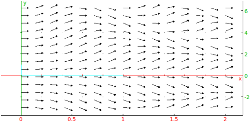
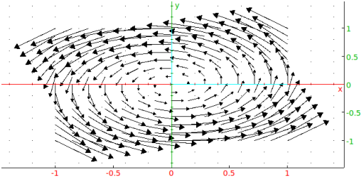

Example
Input:
plotfield(4*sin(t*y),[t=0..2,y=-3..7])
Output:

To draw a vector field:
-
plotfield takes two mandatory arguments and two
optional arguments:
-
V, a list of two expressions involving two variables.
- vars, a list of the two variables. The
variables can optionally include their ranges var=a..b.
- Optionally, xstep=n to specify the discretization
of the first variable.
- Optionally, ystep=m to specify the discretization
of the second variable.
- plotfield(V,vars ⟨
,xstep=n,ystep=m⟩) draws the vector field given by V.
Example
Input:
plotfield(5*[-y,x],[x=-1..1,y=-1..1])
Output:
